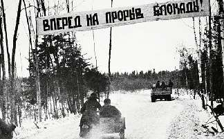

Борис Акунин
Мой календарь
Я не особенно люблю всякие военные праздники и годовщины. От них, как говаривал чеховский герой, «пахнет трупом». Но день прорыва Ленинградской блокады меня всегда заряжает надеждой. На то, что удавки однажды порвутся, щупальцы спрута разожмутся, а обреченные спасутся.
Осада Ленинграда - самая страшная страница самой страшной главы всей российской истории (а в ней страшных глав достаточно).
Очень большой и очень красивый город, а в нем три миллиона человек, остался без пищи и топлива. Начал вымерзать и вымирать от голода. В худшие дни блокады «иждивенец» получал 125 гр плохого хлеба, а больше ничего.
Четверть, а то и треть ленинградцев умерли. Когда человек умирает от голода, он сначала утрачивает интерес ко всему, потом ложится лицом к стене, а потом перестает дышать.
И вот 18 января 1943 года в ходе операции «Искра» блокаду прорвали, снабжение восстановили и всех уцелевших спасли.
Пусть спасут и вас, если судьба пытается взять вас измором. А еще лучше спасите кого-то, кому очень плохо. Прорвите блокаду. Прямо сегодня.